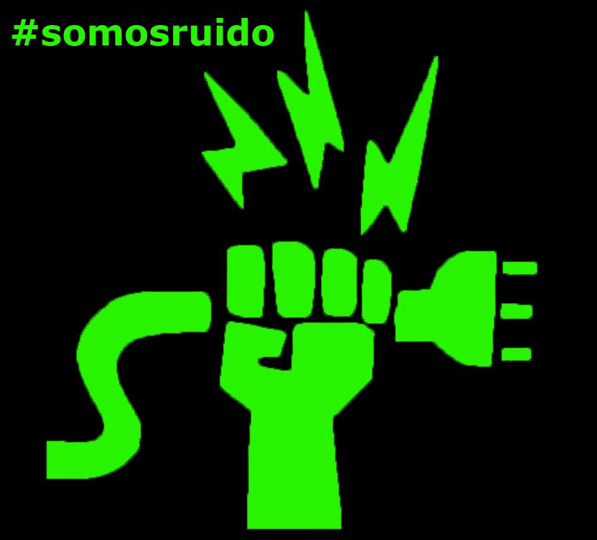
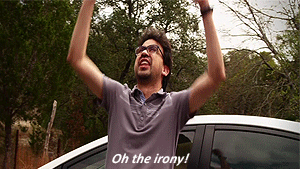
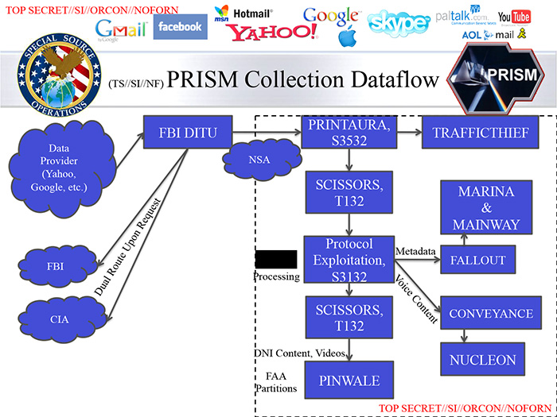

Dale importancia a tu presencia digital
(o por qué deben empezar a importarte tus derechos en la red y su neutralidad)
Germán Martínez Maldo nado
@germaaan_
Interferencias
@Inter_ferencias


¿Quién soy yo?
¿Quiénes somos Interferencias?
¿Qué hacemos?
¿Por qué consideramos que lo que hacemos es importante?
"Es imposible corregir abusos a no ser que sepamos que están sucediendo"
¿Qué es la privacidad?
- RAE: ámbito de la vida privada que se tiene derecho a proteger de cualquier intromisión.
- Oxford: parte más interior o profunda de la vida de una persona, que comprende sus sentimientos, vida familiar o relaciones de amistad.
- Wikipedia: el ámbito de la vida personal de un individuo, quien se desarrolla en un espacio reservado, el cual debe mantenerse confidencial.
- WordReference.com: derecho y propiedad de la propia intimidad y vida privada.
¿Qué es la privacidad?
La privacidad es todo eso que hacemos cuando sentimos que nadie nos está observando. Es lo que nos permite desarrollarnos como personas, lo que nos permite tener dignidad.
La privacidad no es un derecho absoluto, es un derecho fundamental hasta que choca con otro derecho fundamental.
¿Por qué se habla de pronto tanto de privacidad en los últimos años?
Edward Snowden
- Consultor tecnológico y antiguo empleado de la CIA y la NSA
- En junio de 2013 hizo públicos documentos clasificados como alto secreto de la NSA
- Vigilancia másiva: PRISM y XKeyscore
¿Por qué se habla de pronto tanto de privacidad en los últimos años?
Porque sin el conocimiendo del resto del mundo decidieron convertir Internet, en una zona de viligancia masiva e indiscriminada para cumplir sus propios intereses con la excusa de hacer el bien.
Problema: buenos y malos
"Si no he hecho nada malo, no tengo nada que ocultar"
Las personas no se pueden dividir en buenas personas y malas personas
¿Qué es una "mala persona"?
Problema: buenos y malos
La gente corriente no usa Internet para planear ataques con bombas, lo usan para:
- Leer noticias
- Organizar actividades
- Ver el último capítulo de Juego de Tronos
Problema: buenos y malos
La gente corriente no hace nada malo...
por lo que no tienen nada que esconder...
por lo que no deberían ser sospechosos por defecto.
La hipocresía del "me da igual"
Eric Schmidt, Director de Google: "Si estás haciendo algo que no quieres que los demás sepan, tal vez, no deberías hacerlo en primer lugar".
Ordena a los trabajadores de Google que dejen de hablar con el portal CNET después de que publicaran un artículo lleno de información personal y privada obtenida... exclusivamente a través de búsqueda en Google.
La hipocresía del "me da igual"
Mark Zuckerberg, Director de Facebook: La privacidad ya no es una "norma social".
Compra una casa en Palo Alto... y las cuatro adyacentes también.
La hipocresía del "me da igual"
Por eso, por mucho que digamos que nos da igual la privacidad, todos usamos contraseñas.
Realmente no "nos da igual"
Aunque es cierto que como personas nos gusta relacionarnos y por eso compartimos voluntariamente información sobre nosotros...
También como personas queremos ser libres de tener un lugar al que ir donde seamos libres de los ojos juiciosos de otras personas.
Realmente no "nos da igual"
Todo el mundo tiene algo que "esconder".
Aunque más que esconder, es algo que queremos controlar el alcance de su conocimiento: médico, abogado, psicólogo, pareja, mejor amigo.
Realmente no "nos da igual"
Porque no nos comportamos de igual forma cuando sabemos que estamos siendo vigilados.
Nuestro comportamiento cambia a uno más conformista y complaciente.
No queremos ser señalados.
Realmente no "les da igual"
Gobernar con el "miedo" es más fácil y efectivo que gobernar por la fuerza.
Es el sueño de cualquier tirano.
Aunque no seas vigilado constantemente, sabes que en cualquier momento puedes serlo.
Realmente no "les da igual"
"La privacidad nos permite desarrollarnos como personas".
Pensar, razonar, interactuar, hablar de formas que salgan de nosotros.
Ser creativos, explorar nuevas posibilidades... disidencia.
Realmente no "les da igual"
Disidencia porque quizás no estés de acuerdo con su forma de gobernar y es tu derecho poder hacerlo saber libremente.
Y aunque tú no quieras ejercer ese derecho, hay otras personas que si pueden querer ejercerlo de forma libre.
Llegado el punto, todo da igual
No hay "recompensa para los buenos" y "castigo para los malos"
Un sistema de vigilancia masiva suprime nuestra propia libertad en todo tipo de formas
Llegado el punto, todo da igual
EEUU ha decidido unilateralmente que su jurisdicción va a ser el mundo.
Volviendo a PRISM, la cantidad de datos es descomunal por lo que necesitan sistemas que analicen toda la información.
Llegado el punto, todo da igual
Problemas a considerar:
- Logístico
- Ético